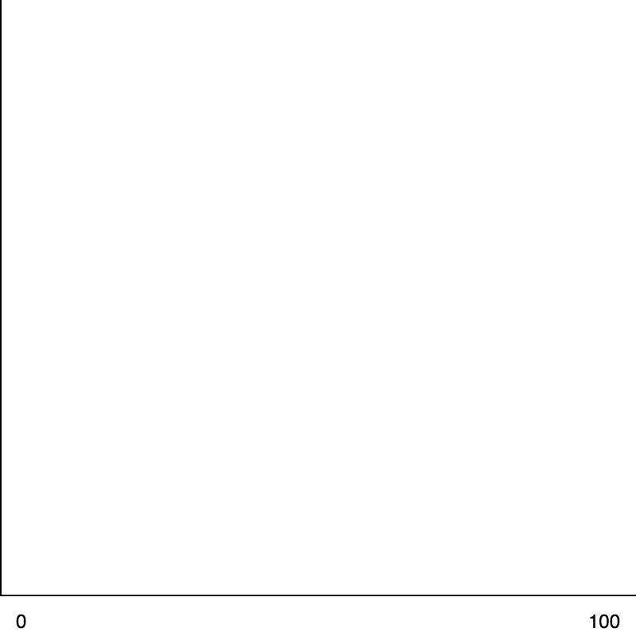
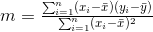

This is a short interactive tutorial on linear regression.
So if you have a dataset of points, we can plot that dataset.
Example: What if we have a dataset where the x-axis is temperature and the y-axis is ice cream sales:

So you know, for example, it was 24 degrees, and there were only 3 ice creams sold,
and on another day, it was 90 degrees, and there were 18 ice creams sold,
so you get the idea, you have a hole lot of points.
What linear regression seas is "Ok, tomorrow it's going to be 50 degrees. Could you gess how many ice creams you are going to sale?".
So the idea of a linear regression is to figure out: "how could we fit a line to this data?"
So the formula for a line is typically written as: y = mx + b.
In statistics textbooks, you will see instead: y = b0 + b1 * x,
This is the same exact formula, m refers to b1 and it
represents the "slope" and b refers to b0 and it
represents the "y-intercept", which is where the line intersects the y-axis.
So the slope determines: "which way does the line point", and the y-intercept
determines: "where is that line relative to the y-axis".
Now, here is the formula:

X Bar is the mean or the average, or the sum of all of the x values divided by the total number of x values. And oviously, same thing for y bar.
This formula actually makes sense, because, let's say the formula for the line is just y = x.
Then the slope would be 1. Right? So you can see why this makes sense.
Now let's take a look at a simple example of linear regression.